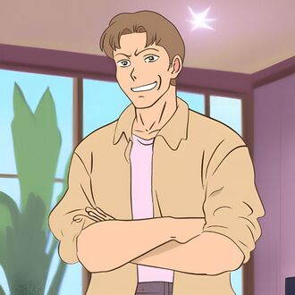
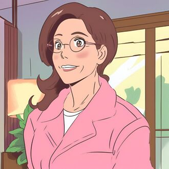
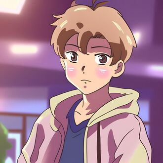
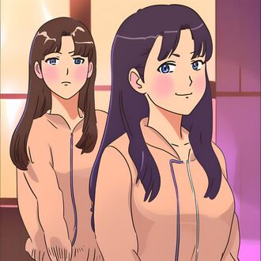
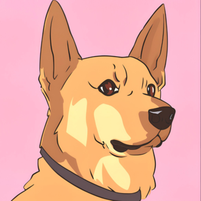
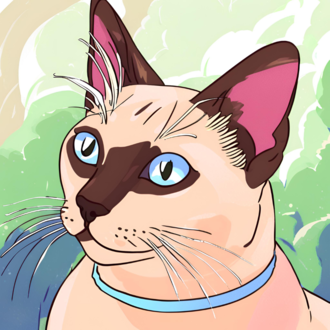

-
Lucas "Trovão"
Descrição
Um ex-super-herói aposentado que agora trabalha como agente de seguros. Ele tem uma personalidade enérgica e adora contar histórias de suas aventuras passadas para sua família.
-
Diana "Flecha"
Descrição
Uma ex-super-heroína que deixou seu papel de combate ao crime para se tornar uma dedicada dona de casa e mãe. Ela é habilidosa em manter a família unida e organizada, enquanto ocasionalmente usa suas habilidades superiores para resolver problemas cotidianos.
-
Miguel "Fluxo"
Descrição
O filho mais novo da família, que está apenas começando a descobrir seus próprios poderes. Ele é curioso, travesso e sempre ansioso para experimentar coisas novas, muitas vezes causando acidentes engraçados com seus poderes recém-descobertos.
-
Sofia "Estrela" e Sara "Sombra"
Descrição
As gêmeas idênticas mais velhas da família, cada uma com suas próprias habilidades únicas. Sofia, apelidada de "Estrela", tem o poder de criar luz intensa, enquanto Sara, apelidada de "Sombra", pode controlar e manipular as sombras ao seu redor. Apesar de suas diferenças, as irmãs são inseparáveis e frequentemente trabalham juntas para resolver problemas.
-
Feroz, a Cachorra Incrível
Descrição
Leal, corajosa e protetora. Feroz é uma cadela destemida que sempre está prontapara defender seus amigos e lutar contra o mal. Ela é inteligente e estratégica, capaz de pensar rápido em situações perigosas. Apesar de sua aparência imponente, ela é gentil com aqueles que estão ao seu lado e sempre pronta para ajudar.
-
Sombra, o Gato Incrível
Descrição
Misterioso, astuto e independente. Sombra é um gato enigmático que sempre parece saber mais do que os outros. Ele é ágil e sorrateiro, capaz de se mover sem ser detectado e desaparecer nas sombras quando necessário. Sombra muitas vezes age sozinho, mas quando se junta a Feroz, sua combinação de habilidades torna-os uma dupla imbatível contra o crime.